Writeup
Challenge Description
In a desperate bid to synchronize my PC clock, I unwittingly downloaded an application that promised a quick fix but instead wrought havoc by encrypting all my important files. Turning to my DFIR friend for help, his attempts to decipher the encrypted mess only worsened the situation, leaving the filesystem corrupted. My friend told me that only a DFIR expert can help recover my files. I’m filled with hope for their assistance in fixing my computer catastrophe.
Questions
Question 1
List all directories that have been renamed, including their original names and the timestamps of when they were renamed.
TimeZone - UTC(+05:30) [YYYY-MM-DD HH:MM:SS.XX]
Format - [ ['OriginalDirName', 'RenamedDirName', 'TimeStamp'] , .. ]
Question 2
Name all the deleted directories with deletion timestamps.
TimeZone : UTC(+05:30) [YYYY-MM-DD HH:MM:SS.XX]
Format - [ ['DirectoryName' , 'TimeStamp'] , .. ]
Question 3
List all directories with their creation times, including originals if any that have been renamed or deleted.
TimeZone : UTC(+05:30) [YYYY-MM-DD HH:MM:SS.XX]
Format - [ ['DirectoryName' , 'CreatedTime'] , .... ]
Question 4
Recover the files that have been deleted, and provide the md5sum of each recovered file.
Format - [ ['file1hash'] , ['file2hash'], ... ]
Question 5
Identify all files that have been deleted (Simple + Permanent), including their deletion timestamps.
TimeZone : UTC(+05:30) [YYYY-MM-DD HH:MM:SS.XX]
Format - [ [ 'filename' , 'TimeStamp' , 'Simple/Permanent' ] , .. ]
Question 6
Restore all encrypted files, decrypt them, and provide the md5sum of each decrypted file after removing any extra bytes before computing the hash.
Format - [ ['hash1'] , ['hash2'], ',..]
References
According to description, the file System is corrupt. Let’s start with fixing it. To fix it, We can open it in Hex Editior. The Resilient File System is not supported by most of the forensics tool so, we are referring to the research papers for its structures.
- Latest version of
Active Disk Editorsupports the ReFS, so can be used for loading the image to verify whether it’s corrupted or not.
Let’s begin repairing the file system.

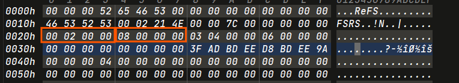
-
Cluster Size =
Bytes Per Sector * Sectors Per Cluster -
Cluster Size :
0x1000
SuperBlock

-
There are 3 SuperBlocks, one located at starting and two are at the end of the file system.
-
These are for the backups to avoid the failure.
-
All contains
LCNwhich points to the primary and secondary Checkpoint.
CheckPoint
-
Similarly, There are 2 CheckPoints.
-
It contains
ReFSversion information,Entry SizeandEntry Offsetrelative in position. -
At offset
0xD0, the 4 bytes are the number of offsets to entries of Object Table, Container Table, Directory Tree etc. -
Navigating those offsets, we can find the offsets to
MSB+standard nodes. -
Note : ReFS v3.2 has signature
MSB+whereas ReFS 1.2 has not any signature.
-
The LCN(1) serves as a way to locate the associated SuperBlock, similarly does for the Checkpoint.
-
Within the system, there are three SuperBlocks and two Checkpoints.
-
Fixing either one of the SuperBlocks or Checkpoints will resolve the issue.
-
It just acts path to reach a point from where it starts parsing the nodes. So, corrupting the
SuperblockandCheckpointcause failure of the file system.
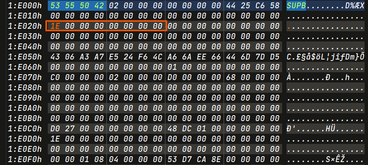
- LCN1 :
0x1e=>[0x1e * 0x1000 = 0x1e000 (offset of Superblock)]

- LCN1 :
0x0f7ffd

- LCN1 :
0x0f7ffe

- LCN1 :
0x27d0
- LCN1 :
0x01dc48
- Now, Let’s open it in
Active Disk Editorand it works fine.
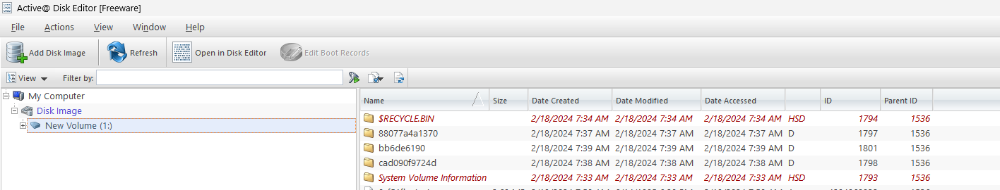
-
ReFS stores logs in
LogFileas NTFS do. But, the structure is entirely new. -
The opcodes of
LogFileis different from the opcodes of NTFS$LogFile. -
The opcodes of ReFS only do
redooperation whereas NTFS doredoandundooperation. -
We can locate the LogFile by searching
MLogand ignores the first twoMLogpages these doesn’t stores anything interesting similar to NTFS$LogFile.$LogFilehas restart area which is0x0000 ~ 0x2000in size.
LogFile
-
A logfile is a metadata file that stores transactional data to facilitate the recovery of the file system to a consistent state in the event of system crashes and unexpected conditions
-
It helps prevent data loss by ensuring that changes to the file system are recorded in a systematic manner, allowing for proper restoration if needed.
-
It contains changes in metadata of files and directories like
CREATE,MOVE,RENAMEandDELETE.
ReFS LogFile vs NTFS $LogFile
Fig : Redo Structure of ReFS
Fig : Structure of Operation Record
- Read More about
NTFS-$LogFile
Now, let’s dive into the structure of the ReFS LogFile
LogFile-Structure

LogFile Entry Structure

Explanation

Red Bounded Area ->
ReFS Entry Header
Green Bounded Area ->
Log Entry Header
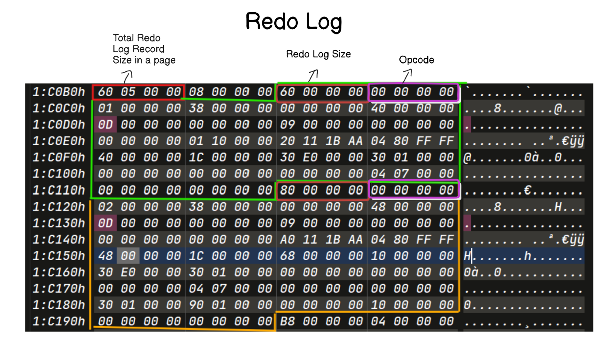
Redo Log Header

Redo Log Header Size : 0x38 bytes
Redo Data Offset Array

Tail Offset : indicates ending of data offset array
Tail Size: size of each transaction
Redo Transactional Data
Example 1

Example 2
Source: ARIN
Example 3
Extracting Log Files from the File System
dd if=ReAL_File_System.001 skip=$((0x20001000)) count=$((0x200A7000 -0x20001000)) of=logs.txt bs=1
Solution
Question-1
-
List all directories that have been renamed, including their original names and the timestamps of when they were renamed.
Format :[ [‘OriginalDirName’, ‘RenamedDirName’, TimeStamp] , .. ]
To identify renamed directories, search for the opcodes associated with directory renaming. Following these opcodes’ consecutive MLog entries will unveil the timestamps indicating when the renaming occurred.
-
Search for the hexadecimal values
30 00 02 00in the LogFile, these values serve as prefixes for directories, while30 00 01 00is indicative of files. Be aware that there might be some false positives in the results. -
File Prefix (from ReFS Detector) :
30 01 00 00 80 01 00 00 00 00 00 00 30 00 01 00
0x2 -> 0x2 -> 0x1 -> 0x1 -> 0x4
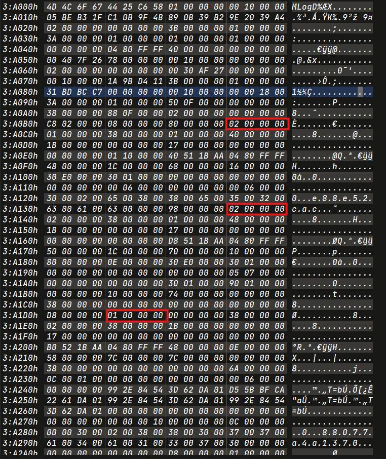

Timestamp will be found in next MLog (starting with opcode 0x4).

['e88e52cac', '88077a4a1370', '2024-02-18 13:10:20.49']
Similarly, We can write a script to make our task easy.
['fb828d071', 'cad090f9724d', '2024-02-18 13:12:12.48']
Final Ans
[
['e88e52cac', '88077a4a1370', '2024-02-18 13:10:20.49'],
['fb828d071','cad090f9724d', '2024-02-18 13:12:12.48']
]
-
Name all the deleted directories with deletion timestamps.
Format : [ [‘DirectoryName’ , ‘TimeStamp’] , .. ]
0x2 -> 0xf -> 0x2 -> 0xf -> 0x4 -> 0x12


Remaining opcodes can be found in MLog.


Permanently Deleted Directories
[
['f8f1c218f9', '2024-02-18 13:11:28.57'],
['de34f60ab', '2024-02-18 13:13:19.60']
]
Simple Directory Deletion Opcode
P(Directory Creation) → 0x06 → 0x04 → 0x04 → 0x04 → 0x04 → 0x03 → 0x02 → 0x02 → 0x01 → 0x01 → 0x0e → 0x04 → 0x03 → 0x04 → 0x04 → 0x04 → 0x01 → 0x04 → 0x03 → 0x04 → 0x04 → 0x08

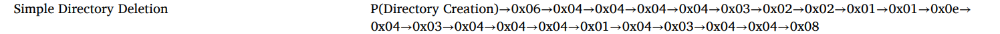


['c062fb828', '2024-02-18 13:10:48.62']
OR,
Simple Deletion Timestamp can be found through analyzing $IXXXXX


Final Ans
[
['f8f1c218f9', '2024-02-18 13:11:28.57'],
['de34f60ab', '2024-02-18 13:13:19.60'],
['c062fb828', '2024-02-18 13:10:48.62']
]
Question -3
-
List all directories with their creation times, including renamed and deleted.
Note : If a directory was renamed, include its original name and creation time.
Fomat : [ [‘DirectoryName’ , ‘CreatedTime’] , …. ]
Dir Creation
0x00 → 0x00 → 0x04 → 0x10 → 0x01 → 0x01 → 0x01 → 0x0e → 0x03 → 0x04

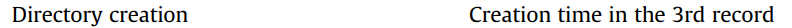

Final Ans
[
['de34f60ab', '2024-02-18 13:06:59.22'],
['e88e52cac', '2024-02-18 13:07:31.13'],
['fb828d071', '2024-02-18 13:08:13.88'],
['f8f1c218f9','2024-02-18 13:08:40.58'],
['c062fb828', '2024-02-18 13:09:14.55'],
['bb6de6190', '2024-02-18 13:09:34.00']
]
Question - 4
-
Recover the files that have been deleted, and provide the md5sum of each recovered file.
Format : [ [‘file1hash’]’ , [‘file2hash2’], … ]
Load the disk image in Active Disk Editor

-
$IXXXXXfile has components like filename, fullpath , deletion time etc. -
$RXXXXXfile contents can be recovered. -
3 files are simply deleted.


-
The
ddcommand can be utilized to extract a file from an image file, with the option to enhance extraction speed by increasing theblock-size. -
Divide the skip and count by block-size.
-
Copying and pasting content from
Active Disk Editorworks for smaller files. However, for larger files, this method won’t work :).
dd if=ReAL_File_System.001 skip=$(((0x1000 * 71168)/1)) count=$(((0x15a)/1)) bs=1 of=simple-pass.txt
dd if=ReAL_File_System.001 skip=$(((0x1000 * 68608)/16)) count=$(((0x04e20)/16)) bs=16 of=19ff211f
dd if=ReAL_File_System.001 skip=$(((0x1000 * 70144))) count=$(((0x041b7))) bs=1 of=fe0c329
f91488b7e00c31793bd7aa98c51896d0 simple-pass.txt
4c009b045056af8f9bb401c69408d2cf 19ff211f
c50c5bcb9e98537e3d63df1bc68a81d0 fe0c329
Final Ans
[
['f91488b7e00c31793bd7aa98c51896d0'],
['4c009b045056af8f9bb401c69408d2cf'],
['c50c5bcb9e98537e3d63df1bc68a81d0']
]
Question - 5
-
Identify all files that have been deleted (Simple + Permanent), including their deletion timestamps.
Format :[ [ ‘filename’ , ‘TimeStamp’ , ‘Simple/Permanent’ ] , .. ]
Simple Deletion

Permanent Deletion


-
simple-pass.txt


TimeStamp

2024-02-18 13:15:00.51
In the same manner, examine the log file for each alternate file.
['simple-pass.txt','2024-02-18 13:15:00.51','Simple'],
['19ff211f','2024-02-18 13:14:31.43','Simple'],
['fe0c329','2024-02-18 13:15:52.49','Simple']
For Permanent Files
0x0f -> 0x02 -> 0x0f -> 0x02 -> 0x04


('ead47cb','2024-02-18 13:19:26.69','Permanent')
('essay.txt','2024-02-18 13:18:22.47','Permanent')
Final Ans
[
['simple-pass.txt','2024-02-18 13:15:00.51','Simple'],
['19ff211f','2024-02-18 13:14:31.43','Simple'],
['fe0c329','2024-02-18 13:15:52.49','Simple'],
['ead47cb','2024-02-18 13:19:26.69','Permanent'],
['essay.txt','2024-02-18 13:18:22.47','Permanent']
]
Question-6
-
Restore all encrypted files, decrypt them, and provide the md5sum of each decrypted file after removing any extra bytes before computing the hash.
Format :[[‘hash1’], [‘hash2’],..]
An Overview on time_update.exe
- Enumerate each directory and rename all files.
- Generate a random time and convert it to
SystemToFileTime. Generatekey1and append a 4-byte nonce. - Compute the MD5 hash of
key1and set it askey2. - Rename each file with a random time and encrypt it.
- Encryption process:
enc[i] = file[i] ^ key1[i] ^ key2[i].
- Encryption process:
- Enumerate all files again and update their names with the
.tortextension. - Before exiting, restore the system time to its initial state.
Because it updates the time before encrypting the files, it leaves a trace in the log files that could potentially be used to recover key.
File-Decryption
-
The
time_update.exeuses two keyskey1and hash ofkey1as key2 to encrypt the files. -
To find
key1, we need to locate the second rename timestamp. However,key1includes an additional 4-byte nonce, which is unknown, necessitating brute force to obtain the correctkey1. -
By cross-referencing the encrypted files in the logfile, we can identify the original filenames and then brute force the files using their headers to determine the nonce.
-
Some files only have small byte file signatures, resulting in numerous possible nonces. We can validate these nonces by examining the end-of-file signatures and chunks present in the file.


 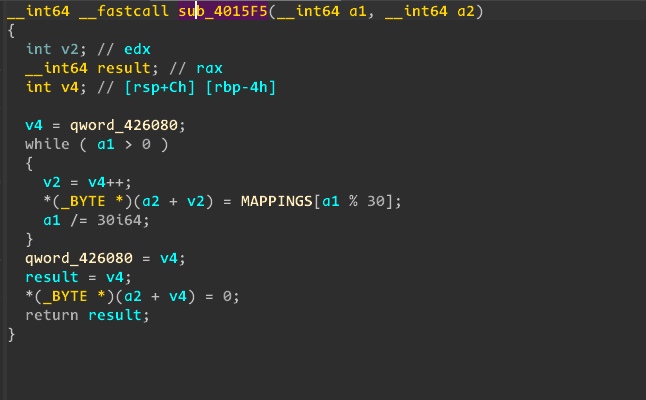
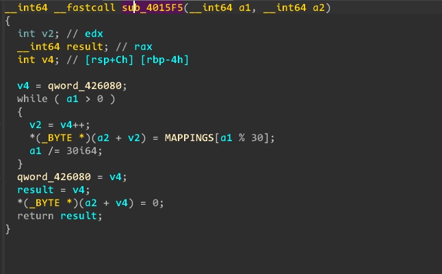

Opcode for Renamed File :
0x02 → 0x05 → 0x01 → 0x04 → 0x04
-
Let’s manually search for the required information. We’ll begin by assigning filenames with the extension
tortand then conduct a search within the log file. -
Specifically, we’ll focus on identifying the first operation code (opcode) located at offset
0xb0. -
After locating it, we’ll parse the data and examine the previous MLog to find the corresponding filenames.

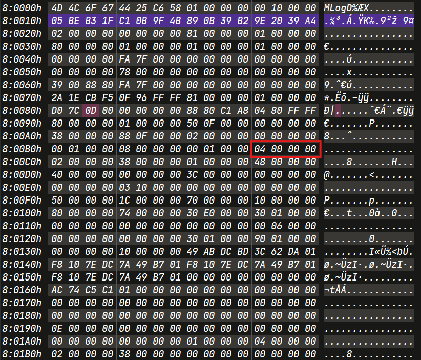
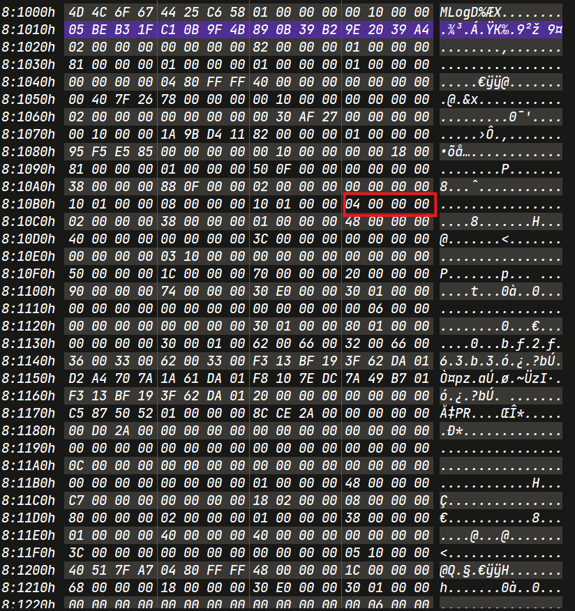
First Rename : 15005-39026.pdf -> bf2f63b3
Search for the bf2f63b3
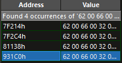

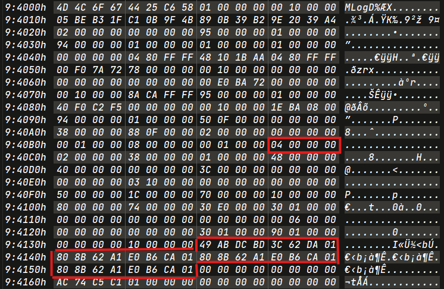
Second Rename : bf2f6b3 -> 0cf51fbc
The system time is expressed in Coordinated Universal Time (UTC).
Rename Time(Encryption Key) : 2010-02-26 12:38:43.0000000
Enc Key : 2010 2 2 26 12 38 43 0

Third Rename : 0cf51fbc -> 0cf51fbc.tort
Likewise, find the timestamp used for encryption on all remaining files, and proceed to extract those files accordingly.
binary-01.gif -> c7982ef6 -> a917438f -> a917438f.tort : 1995 2 2 27 2 11 42 0
Everest Vista.webp -> d406327c -> 3a7fab71 -> 3a7fab71.tort : 1990 8 2 28 21 6 35 0
Paranormal Phenomenon.docx -> 830c92a3 -> bb292337 -> bb292337.tort : 1993 7 2 16 17 10 46 0
so-cappy.jpg -> 141e0f79 -> 24819686 -> 24819686.tort : 2001 4 2 19 8 27 45 0
stuffs.rar -> f15ebcd2 -> 7a6c7166 -> 7a6c7166.tort : 2009 11 2 22 17 5 55 0
ySq12b0T.mp4 -> 86c66c9c -> 185c65f8 -> 185c65f8.tort : 2007 7 2 28 3 27 33 0
vl36hkjkzbh91.png -> 313feb6e -> cc876a3b -> cc876a3b.tort : 1985 3 2 4 16 23 53 0
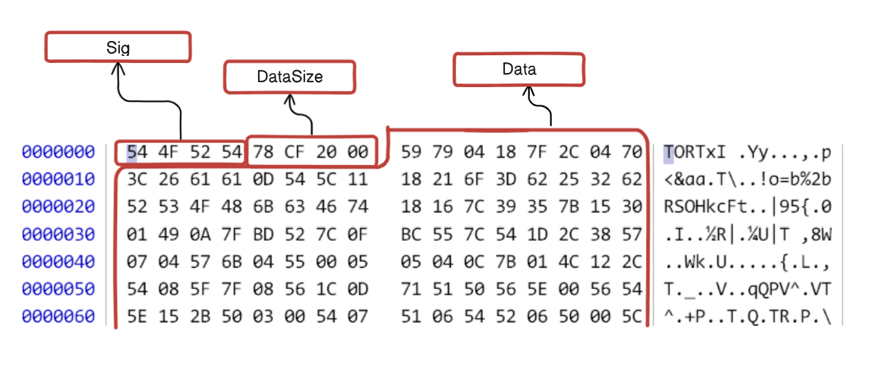
Carving Out Files
0cf51fbc.tort
Let’s take a look at it using Active Disk Editor.


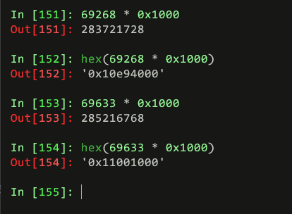
dd if=ReAL_File_System.001 skip=$(((0x10e94000)/4096)) count=$(((0x16c000)/4096)) bs=4096 of=0cf51fbc_1.tort
dd if=ReAL_File_System.001 skip=$(((0x11001000)/4096)) count=$(((0x141000)/4096)) bs=4096 of=0cf51fbc_2.tort
cat 0cf51fbc_1.tort 0cf51fbc_2.tort > 0cf51fbc.tort
a917438f.tort
dd if=ReAL_File_System.001 skip=$(((0x10025000)/64)) count=$(((0x89ce40)/64)) bs=64 of=a917438f.tort
After extracting the encrypted files, remove any additional bytes.

7a6c7166.tort


Go to offset 0x108c2000, 0x10c05000 & read 830 * 0x1000 ,130 * 0x1000bytes respectively
dd if=ReAL_File_System.001 skip=$(((0x108c2000)/8192)) count=$(((830 * 0x1000)/8192)) bs=8192 of=7a6c7166_1.tort
dd if=ReAL_File_System.001 skip=$(((0x10c05000)/4096)) count=$(((130 * 0x1000)/4096)) bs=4096 of=7a6c7166_2.tort
cat 7a6c7166_1.tort 7a6c7166_2.tort > 7a6c7166.tort
185c65f8.tort
dd if=ReAL_File_System.001 skip=$(((68743 * 0x1000)/4096)) count=$(((525 * 0x1000)/4096)) bs=4096 of=185c65f8.tort
24819686.tort
dd if=ReAL_File_System.001 skip=$(((0x12800000)/4096)) count=$(((0x10000)/4096)) bs=4096 of=24819686.tort
3a7fab71.tort
dd if=ReAL_File_System.001 skip=$(((0x10000000)/4096)) count=$(((0x25000)/4096)) bs=4096 of=3a7fab71.tort
bb292337.tort
dd if=ReAL_File_System.001 skip=$(((0x13a00000)/4096)) count=$(((0x8000)/4096)) bs=4096 of=bb292337.tort
cc876a3b.tort
dd if=ReAL_File_System.001 skip=$(((0x1000 * 72705))) count=$((0x175f)) bs=1 of=cc876a3b.tort
Remove extra bytes from the files.
import struct
file_names = ['0cf51fbc.tort','a917438f.tort','7a6c7166.tort','185c65f8.tort','24819686.tort','3a7fab71.tort','bb292337.tort','cc876a3b.tort']
for _ in file_names:
buff = bytes()
file = open(_, 'rb')
sig = file.read(0x04)
sz = struct.unpack("<I", file.read(0x04))[0]
buff += file.read(sz)
open(f"{_}", 'wb').write(sig + sz.to_bytes(4,'little') + buff)
typedef struct _SYSTEMTIME {
WORD wYear;
WORD wMonth;
WORD wDayOfWeek;
WORD wDay;
WORD wHour;
WORD wMinute;
WORD wSecond;
WORD wMilliseconds;
} SYSTEMTIME, *PSYSTEMTIME, *LPSYSTEMTIME;
Read about SystemTime
BOOL SystemTimeToFileTime(
[in] const SYSTEMTIME *lpSystemTime,
[out] LPFILETIME lpFileTime
);
Read about SystemTimetoFileSystemTime
File_Decryption_Part
#include <iostream>
#include <stdint.h>
#include <string>
#include <Windows.h>
using namespace std;
#define ROTATE_LEFT(x, n) (((x) << (n)) | ((x) >> (32-(n))))
int main(int argc , char * argv[]){
SYSTEMTIME st;
FILETIME ft;
st.wYear = (int16_t) stoi(argv[1]);
st.wMonth = (int16_t) stoi(argv[2]);
st.wDayOfWeek = (int16_t)stoi(argv[3]);
st.wDay = (int16_t) stoi(argv[4]);
st.wHour = (int16_t) stoi(argv[5]);
st.wMinute = (int16_t) stoi(argv[6]);
st.wSecond = (int16_t) stoi(argv[7]);
st.wMilliseconds = (int16_t) stoi(argv[8]);
SystemTimeToFileTime(&st, &ft);
cout << ft.dwLowDateTime << " : " << ft.dwHighDateTime<< ":";
int64_t low = ROTATE_LEFT(static_cast<int64_t>(ft.dwLowDateTime), 4);
int64_t high = ROTATE_LEFT(static_cast<int64_t>(ft.dwHighDateTime) , 3);
cout << low << ":" << high;
return 0;
}
- Generate all possible 4 bytes nonces wordlist.
crunch 4 4 "0123456789abcdef\!#&*%GHIJ-lm+_" > passwd.txt
import os
import hashlib
MAPPINGS = ['0', '1', '2', '3', '4', '5', '6', '7', '8', '9', 'a', 'b', 'c', 'd', 'e', 'f', '!', '#', '&', '*', '%', 'G', 'H', 'I', 'J', '-', 'l', 'm', '+', '_']
class Extensions:
PNG = b"\x89\x50\x4E\x47\x0D\x0A\x1A\x0A"
JPG = b"\xff\xd8\xff"
JPG_END = b"\xff\xd9"
WEBP = b"RIFF\x08\x4E\x02\x00" ## [4:8] -> file size
RAR = b"\x52\x61\x72\x21\x1A"
GIF = b"\x47\x49\x46\x38\x39\x61"
MP4 = b'ftyp'
ZIP = b"\x50\x4B\x03\x04\x14\x00\x06\x00"
PDF = b'%PDF-1.'
def check_header(buff, key, ext):
dec = Decryptor()
temp_key2 = hashlib.md5(key).hexdigest().encode()
if ext == 'png':
res = dec(encbuff=buff[: len(Extensions.PNG)], key1=key, key2=temp_key2)
if res == Extensions.PNG : return True
if ext == 'jpg':
res = dec(encbuff=buff[: len(Extensions.JPG)], key1=key, key2=temp_key2)
if res[:3] == Extensions.JPG:
res = dec(encbuff=buff, key1=key, key2=temp_key2)
if(res[-2:] == Extensions.JPG_END and (b'EXIF' in res.upper() or b'JFIF' in res)): return True
if ext == 'webp':
res = dec(encbuff=buff[: len(Extensions.WEBP)], key1=key, key2=temp_key2)
if res == Extensions.WEBP: return True
if ext == 'rar':
res = dec(encbuff=buff[: len(Extensions.RAR)], key1=key, key2=temp_key2)
if res == Extensions.RAR: return True
if ext == 'gif':
res =dec(encbuff=buff[: len(Extensions.GIF)], key1=key, key2=temp_key2)
if res == Extensions.GIF: return True
if ext == 'zip' or ext == 'docx':
res =dec(encbuff=buff[: len(Extensions.ZIP)], key1=key, key2=temp_key2)
if res == Extensions.ZIP: return True
if ext == 'mp4':
res =dec(encbuff=buff[:32], key1=key, key2=temp_key2)
if res[4:8] == Extensions.MP4:
res =dec(encbuff=buff, key1=key, key2=temp_key2)
if (b'moov' in res and b'mdat' in res): return True
if ext == 'pdf':
res = dec(encbuff=buff[:7], key1=key, key2=temp_key2)
if res == Extensions.PDF: return True
def encrypt(val):
rounds = 16
delta = 0x1A2B693C
sumval = 0x00000000
keys = [0x1234f, 0x1bc0d, 0x80112, 0x4ef50]
v0, v1 = 0, val
for _ in range(rounds):
sumval += (delta)
v0 = (((( (v1 << 4) + keys[0]) ^ (v1 + sumval + keys[1]) ^ ((v1 >> 5) )) + keys[3]) & 0xffffffff)
v1 = v0
val = v0
return val
def get_key1(val, key):
while(val > 0):
key += MAPPINGS[val % 30].encode()
val //= 30
return key
def md5digestString(a): return hashlib.md5(a).hexdigest().encode()
class Decryptor(object):
def __init__(self) -> None:
self.key1 : bytes = None
self.key2 : bytes = None
def update_keys(self, key1 , key2) -> None:
self.key1 = key1
self.key2 = key2
def decrypt(self, encbuff: bytes) -> None:
self.buffer = bytearray(len(encbuff))
for _ in range(len(self.buffer)):
self.buffer[_] = (encbuff[_] ^ self.key1[_ % len(self.key1)] ^ self.key2[_ % len(self.key2)])
def __call__(self, key1 : bytes , key2 : bytes , encbuff : bytes) -> bytearray:
if self.key1 == None or self.key2 == None:
self.update_keys(key1=key1, key2=key2)
self.decrypt(encbuff=encbuff)
return self.buffer
if __name__ == "__main__":
base_dir = "encrypted/"
files = ['0cf51fbc.tort','a917438f.tort','3a7fab71.tort', 'bb292337.tort', '24819686.tort', '7a6c7166.tort', '185c65f8.tort', 'cc876a3b.tort']
ext = ['pdf','gif', 'webp', 'docx', 'jpg', 'rar', 'mp4', 'png']
dec_files = ['15005-39026.pdf','binary-01.gif','Everest Vista.webp','Paranormal Phenomenon.docx','so-cappy.jpg','stuffs.rar','ySq12b0T.mp4','vl36hkjkzbh91.png']
time_exe = "/mnt/e/filetime.exe" # Compiled exe path
timestamps = ["2010 2 2 26 12 38 43 0",'1995 2 2 27 2 11 42 0', '1990 8 2 28 21 6 35 0','1993 7 2 16 17 10 46 0','2001 4 2 19 8 27 45 0','2009 11 2 22 17 5 55 0','2007 7 2 28 3 27 33 0','1985 3 2 4 16 23 53 0']
for _ in range(0,len(files)):
w = Decryptor()
print("File : ", dec_files[_])
enc_buff = open(f"{base_dir}{files[_]}", "rb").read()[8:]
key1 = b""
t = timestamps[_].split(" ")
out = os.popen(f"{time_exe} {t[0]} {t[1]} {t[2]} {t[3]} {t[4]} {t[5]} {t[6]} {t[7]}").read()
out = out.split(":")
out = [int(_) for _ in out]
key1 += get_key1((out[3] & 0xffffffff), b'')
key1 += get_key1((out[2] & 0xffffffff) , b'')
key1 += get_key1((encrypt((out[2] + out[3]) & 0xffffffff)) , b'')
key1 += get_key1((encrypt((out[2] * out[3]) & 0xffffffff)) , b'')
key1 += get_key1((encrypt((out[2] & out[3]) & 0xffffffff)) , b'')
nonce = None
if nonce == None:
passw = open("passwd.txt", "r")
while(t:= passw.readline().strip()):
temp = key1 + t.encode()
status = check_header(
enc_buff, temp,ext[_]
)
if status == True:
nonce = t.encode()
print(f'[+] Found for {files[_]} :: nonce : {nonce} key1 : {key1.decode()}{nonce.decode()}')
key1 += nonce
key2 = hashlib.md5(key1).hexdigest().encode()
dec = w(encbuff=enc_buff, key1= key1, key2= key2)
open(f"decrypted/{dec_files[_]}", 'wb').write(dec)
da8ed3e98eb5a2ba769ea60b48b0f6eb 15005-39026.pdf
d58621ce6e560ba1c045892aef0b5f8b binary-01.gif
683092bd6640e62a3dc49b412da4fe71 Everest Vista.webp
11d9788ce48371a6ef230892ada1554d Paranormal Phenomenon.docx
bc9a53c83976e9779bce2d0635f1bbbe so-cappy.jpg
111fb8624db9365af79e6ec446b00eac stuffs.rar
76675928a19bcc5602ef81c7a833d3fa vl36hkjkzbh91.png
4d9c5a006c4315625c86d94a8fd9fd2e ySq12b0T.mp4
Final Ans
[
['da8ed3e98eb5a2ba769ea60b48b0f6eb'],
['d58621ce6e560ba1c045892aef0b5f8b'],
['683092bd6640e62a3dc49b412da4fe71'],
['11d9788ce48371a6ef230892ada1554d'],
['bc9a53c83976e9779bce2d0635f1bbbe'],
['111fb8624db9365af79e6ec446b00eac'],
['76675928a19bcc5602ef81c7a833d3fa'],
['4d9c5a006c4315625c86d94a8fd9fd2e'],
]
Flag : bi0sctf{ReAL_1_w0nd3r_wHa7_t1m3_is_17_14dbc653fdb414c1d}